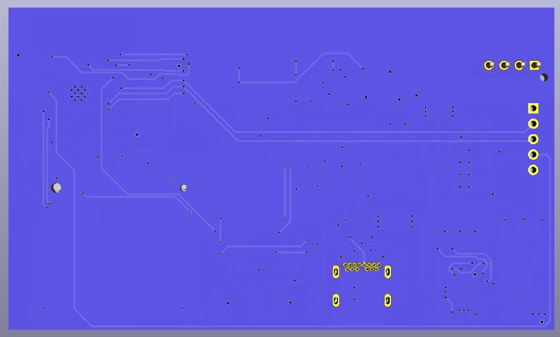
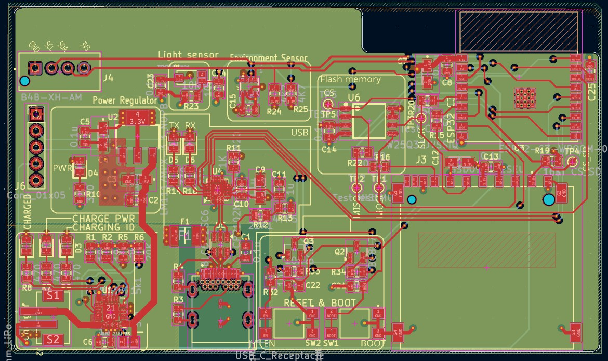
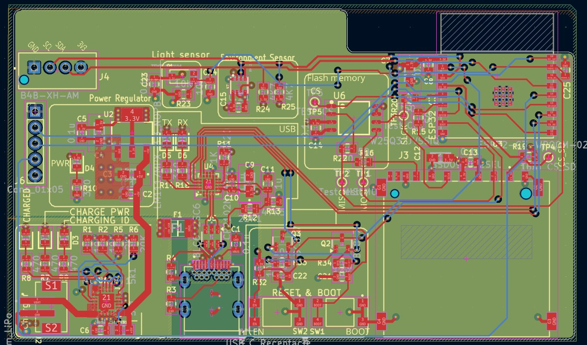

ESP32‑Based Environmental Sensor with WiFi IoT
1. Project Introduction
In this project, I designed and assembled a custom 4‑layer IoT development board built around the ESP32‑C3 microcontroller. The board integrates multiple sensors, precision analog circuitry, flexible storage options, and robust power management, making it suitable for real‑time classification and edge decision‑making without relying on cloud services.

3D Bottom View
ESP32-based Sensor PCB Layout Views
Below are the top and bottom copper layers of the Board:

Top Signal Layout

Bottom Signal Layout
2. PCB Design Overview
The board is engineered as a medium‑complexity, four‑layer design featuring:
- ESP32‑C3 SoC with Wi‑Fi and BLE connectivity
- Environmental and ambient sensors
- Onboard SPI flash memory and microSD card storage
- USB‑C power and data interface
- LiPo battery support with charging and protection circuitry
- 3.3V and 5V regulated power rails
- USB‑to‑UART bridge for programming and debugging
- Boot and reset buttons, GPIO header, and status LEDs
- Test points for debugging and validation
The 4‑layer stackup includes dedicated power and ground planes to improve signal
integrity, reduce noise, and support high‑speed digital routing. Component placement
and routing were optimized for manufacturability, thermal performance, and clean
signal paths.
3. ESP32 Sensor Board Features
- Microcontroller: ESP32‑C3 with Wi‑Fi and BLE
- Power: USB‑C input, LiPo battery connector, onboard 3.3V and 5V regulation
- Storage: MicroSD card slot and SPI flash memory
- Sensors: BME280 (temperature, humidity, pressure)
- Interfaces: I2C, SPI, USB‑to‑UART bridge
- User Interaction: Boot and reset buttons, GPIO header, status LEDs
- PCB Design: 4‑layer stackup, optimized layout, test points for debugging
4. Tools Used
- KiCad 7: Schematic design, PCB layout, 4‑layer stackup, DRC checks
- ESP-IDF / Arduino Core: Firmware development and testing
- PlatformIO: Build system and project environment
- J-Link / USB‑to‑UART: Programming and debugging interface
- Logic Analyzer: Signal inspection and protocol debugging (I2C/SPI/UART)
- Multimeter & Bench Power Supply: Hardware bring‑up and validation
- 3D Viewer (KiCad): Mechanical clearance and component placement checks
5. Potential Applications
- Smart Home Monitoring: Detect environmental anomalies using onboard sensors.
- Environmental Data Analysis: Perform on‑board classification of air quality or ambient conditions.
- Portable IoT Devices: Battery‑powered field sensors for agriculture, research, or wearables.
- Edge AI Applications: Use the ESP32‑C3 with AI‑enabled libraries for voice control or contextual insights.